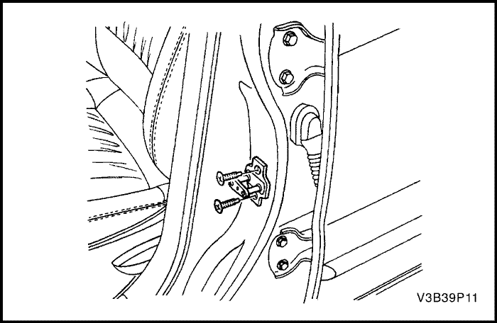

SECCIÓN 9P
PUERTAS
Precaución: Desconecte el cable negativo de la batería antes de quitar o instalar cualquier equipo eléctrico o siempre que algún equipo o herramienta pueda entrar en contacto con las terminales eléctricas expuestas. Al desconectar este cable, ayudará a evitar lesiones personales y daños al vehículo. El encendido también debe estar en la posición LOCK (bloqueado), a menos que se indique lo contrario.
ESPECIFICACIONES
Especificación de apriete
| Aplicación | N•m | Lb-Ft | Lb-pulgada |
| Tornillos bisagra de la puerta a carrocería | 36 | 27 | - |
| Tornillos bisagra de la puerta a puerta | 20 | 15 | - |
| Perno articulación para mantener la puerta abierta a carrocería | 25 | 18 | - |
| Tornillos articulación para mantener la puerta abierta a puerta | 9 | - | 80 |
| Tornillos del cebador de bloqueo de la puerta | 30 | 22 | - |
| Tornillos del soporte del tirador de la puerta | 3 | - | 27 |
| Tornillos del cierre de puerta delantera | 8 | - | 71 |
| Tornillo de la manilla interior de la puerta | 3 | - | 27 |
| Tornillo del moldeo del canal exterior | 1.3 | - | 12 |
| Tornillos de la manilla exterior de la puerta | 4.5 | - | 40 |
| Tornillos de la guía de puerta trasera | 8 | - | 71 |
| Tornillo de la guía de puerta trasera | 4 | - | 35 |
| Tornillos del cierre de puerta trasera | 8 | - | 71 |
| Tuercas del regulador de ventanillas | 8 | - | 71 |
DIAGRAMAS DE ESQUEMAS Y DIRECCIONES
Circuito de alimentación de los cierres de puertas
Circuito de ventanillas eléctricas (Sólo delanteras)
Circuito de ventanillas eléctricas (Delanteras y traseras)
DIAGNOSTICO
Ventanillas eléctricas
Sistema sólo con ventanillas eléctricas delanteras, una o ambas ventanillas no funcionan
Precaución: Cuando los motores de las ventanillas se alimentan directamente de una batería con cables puente, asegúrese de que uno de los cables puente dispone de un fusible. Si se tocan, de forma accidental, ambos puentes, el fusible evitará la producción de chispas y quemaduras debidas a un repentino calentamiento del terminal.
| Paso | Medida | Valor(es) | Sí | No |
| 1 | - Gire el encendido a ON.
- Intente usar ambas ventanillas eléctricas.
¿Funciona alguna de ellas? | - | Vaya al Paso 18 | Vaya al Paso 2 |
| 2 | Inspeccione visualmente la conexión en el interruptor doble de la ventanilla eléctrica. ¿Se encuentra conectado correctamente el conector eléctrico al interruptor? | - | Vaya al Paso 4 | Vaya al Paso 3 |
| 3 | Conecte correctamente el conector eléctrico al interruptor doble de la ventanilla eléctrica. ¿Está completa la reparación? | - | Sistema Bien | - |
| 4 | - Desconecte el conector eléctrico del interruptor doble de la ventanilla eléctrica.
- Gire el encendido a ON.
- Compruebe la tensión en los terminales 4 y 5 del conector del interruptor principal de la ventanilla eléctrica.
¿La tensión es igual al valor especificado? | 11-14 v | Vaya al Paso 16 | Vaya al Paso 5 |
| 5 | Compruebe los fusibles EF14 y EF9. ¿Alguno de los fusibles está fundido? | - | Vaya al Paso 6 | Vaya al Paso 7 |
| 6 | - Compruebe que si hay cortocircuito y repárelo en caso necesario.
- Sustituya el/los fusible(s) fundido(s).
¿Está completa la reparación? | - | Sistema Bien | - |
| 7 | - Gire el encendido a ON.
- Compruebe las tensiones en los fusibles EF9 y EF14.
¿Ambas tensiones son iguales al valor especificado? | 11-14 v | Vaya al Paso 9 | Vaya al Paso 8 |
| 8 | Repare la fuente de alimentación del fusible que no indica tensión de la batería estando el encendido accionado. ¿Está completa la reparación? | - | Sistema Bien | - |
| 9 | - Quite el relé de la ventanilla eléctrica.
- Gire el encendido a ON.
- Compruebe la tensión en los terminales 30 y 85 en la toma del relé de la ventanilla eléctrica. (Los terminales de la toma del relé pueden identificarse por las marcas de la parte inferior del propio relé).
¿Indica el voltímetro el valor especificado en los terminales 30 y 85? | 11-14 v | Vaya al Paso 11 | Vaya al Paso 10 |
| 10 | Repare el circuito abierto entre los fusibles y el relé de la ventanilla eléctrica. ¿Está completa la reparación? | - | Sistema Bien | - |
| 11 | Estando aún el relé de la ventanilla eléctrica quitado, utilice un ohmímetro para comprobar la resistencia entre masa y el terminal 86 de la toma del relé de la ventanilla eléctrica. ¿Se indica la resistencia correcta en el ohmiómetro? | ≈ 0 Ω | Vaya al Paso 13 | Vaya al Paso 12 |
| 12 | Repare el circuito abierto entre la masa y el terminal 86 de la toma del relé de la ventanilla eléctrica. ¿Está completa la reparación? | - | Sistema Bien | - |
| 13 | - Sustituya temporalmente el relé de la ventanilla eléctrica por otro en buen estado.
- Intente usar las ventanillas eléctricas.
¿Funcionan las ventanillas eléctricas con el relé de sustitución? | - | Vaya al Paso 14 | Vaya al Paso 15 |
| 14 | - Devuelva el relé sustituido a su posición original.
- Vuelva a colocar el relé original de la ventanilla eléctrica.
¿Está completa la reparación? | - | Sistema Bien | - |
| 15 | Repare el circuito abierto entre el terminal 87 de la toma del relé de la ventanilla eléctrica y los terminales 4 y 5 del interruptor doble de la ventanilla eléctrica. ¿Está completa la reparación? | - | Sistema Bien | - |
| 16 | Estando el interruptor doble de la ventanilla eléctrica desconectado, utilice un ohmímetro para comprobar la resistencia entre masa y el terminal 7 del conector del interruptor doble de la ventanilla eléctrica. ¿La resistencia es igual al valor especificado? | ≈ 0 Ω | Vaya al Paso 18 | Vaya al Paso 17 |
| 17 | Repare el circuito abierto entre masa y el terminal 7 del conector del interruptor doble de la ventanilla eléctrica. ¿Está completa la reparación? | - | Sistema Bien | - |
| 18 | - Quite el panel de guarnecido de la puerta cuya ventanilla eléctrica no funcione.
- Acerque lo suficiente a la puerta una batería de vehículo, de forma que el motor de la ventanilla pueda recibir alimentación eléctrica directamente de la batería usando cables puente.
- Desconecte el conector del motor de la ventanilla de dos pines situado en la puerta.
Importante: Para evitar que el fusible del cable puente se funda, no ponga en contacto dichos cables puente entre sí. - Conecte un cable puente entre el terminal negativo de la batería y uno de los terminales del conector del motor de la ventanilla de dos pines.
- Conecte un cable puente que disponga de fusible entre el terminal positivo de la batería y el terminal restante del conector del motor de la ventanilla de dos pines. A menos que el motor se encuentre al final de su recorrido, la ventanilla debe moverse estando conectados los cables puente.
- Para mover la ventanilla en la dirección contraria, invierta las conexiones del cable puente en el conector del motor de la ventanilla.
¿Funciona la ventanilla eléctrica en ambas direcciones cuando el motor se hace funcionar directamente desde la batería? | - | Vaya al Paso 20 | Vaya al Paso 19 |
| 19 | Vuelva a colocar el motor de la ventanilla. ¿Está completa la reparación? | - | Sistema Bien | - |
| 20 | - Antes de volver a conectar el conector del motor de la ventanilla de dos pines, conecte un ohmímetro entre los terminales para comprobar la resistencia del motor.
- Anote la lectura del ohmímetro para la resistencia del motor.
- Vuelva a conectar el conector del motor e instale de nuevo el panel de guarnecido de la puerta.
- Desconecte el conector eléctrico del interruptor doble de la ventanilla eléctrica.
- En el conector del interruptor doble de la ventanilla eléctrica, utilice un ohmímetro para comprobar la resistencia entre los terminales que llevan al motor probados en el Paso 15
¿Es la resistencia en el conector del interruptor aproximadamente igual a la resistencia medida anteriormente en el conector del motor? | - | Vaya al Paso 22 | Vaya al Paso 21 |
| 21 | Repare el circuito abierto entre el motor de la ventanilla y el interruptor de ésta. ¿Está completa la reparación? | - | Sistema Bien | - |
| 22 | Vuelva a colocar el interruptor de la ventanilla eléctrica. ¿Está completa la reparación? | - | Sistema Bien | - |
Sistema con ventanillas eléctricas delanteras y traseras, una o ambas ventanillas delanteras no funcionan
Precaución: Cuando los motores de las ventanillas se alimentan directamente de una batería con cables puente, asegúrese de que uno de los cables puente dispone de un fusible. Si se tocan, de forma accidental, ambos puentes, el fusible evitará la producción de chispas y quemaduras debidas a un repentino calentamiento del terminal.
| Paso | Medida | Valor(es) | Sí | No |
| 1 | - Gire el encendido a ON.
- Gire el encendido a ON.
- Intente usar las ventanillas eléctricas delanteras.
- Intente usar las ventanillas eléctricas delanteras.
¿Funciona alguna de ellas? | - | Vaya al Paso 18 | Vaya al Paso 2 |
| 2 | Inspeccione visualmente la conexión en el interruptor principal de la ventanilla eléctrica. ¿Se encuentra conectado correctamente el conector eléctrico al interruptor principal? | - | Vaya al Paso 4 | Vaya al Paso 3 |
| 3 | Conecte correctamente el conector eléctrico al interruptor principal de la ventanilla eléctrica. ¿Está completa la reparación? | - | Sistema Bien | - |
| 4 | - Desconecte el conector eléctrico del interruptor principal de la ventanilla eléctrica.
- Gire el encendido a ON.
- Compruebe la tensión en los terminales 3 y 10 del conector del interruptor principal de la ventanilla eléctrica.
¿La tensión es igual al valor especificado? | 11-14 v | Vaya al Paso 16 | Vaya al Paso 5 |
| 5 | Compruebe los fusibles EF14 y EF9. ¿Alguno de los fusibles está fundido? | - | Vaya al Paso 6 | Vaya al Paso 7 |
| 6 | - Compruebe que si hay cortocircuito y repárelo en caso necesario.
- Sustituya el/los fusible(s) fundido(s).
¿Está completa la reparación? | - | Sistema Bien | - |
| 7 | - Gire el encendido a ON.
- Compruebe las tensiones en los fusibles EF9 y EF14.
¿Ambas tensiones son iguales al valor especificado? | 11-14 v | Vaya al Paso 9 | Vaya al Paso 8 |
| 8 | Repare la fuente de alimentación del fusible que no indica tensión de la batería estando el encendido accionado. ¿Está completa la reparación? | - | Sistema Bien | - |
| 9 | - Quite el relé de la ventanilla eléctrica.
- Gire el encendido a ON.
- Compruebe la tensión en los terminales 30 y 86 en la toma del relé de la ventanilla eléctrica. (Los terminales de la toma del relé pueden identificarse por las marcas de la parte inferior del propio relé).
¿El voltímetro indica el valor especificado? | 11-14 v | Vaya al Paso 11 | Vaya al Paso 10 |
| 10 | Repare el circuito abierto entre los fusibles y el relé de la ventanilla eléctrica. ¿Está completa la reparación? | - | Sistema Bien | - |
| 11 | Estando aún el relé de la ventanilla eléctrica quitado, utilice un ohmímetro para comprobar la resistencia entre masa y el terminal 85 de la toma del relé de la ventanilla eléctrica. ¿Se indica la resistencia correcta en el ohmiómetro? | ≈ 0 Ω | Vaya al Paso 13 | Vaya al Paso 12 |
| 12 | Repare el circuito abierto entre la masa y el terminal 85 de la toma del relé de la ventanilla eléctrica. ¿Está completa la reparación? | - | Sistema Bien | - |
| 13 | - Sustituya temporalmente el relé de la ventanilla eléctrica por otro en buen estado.
- Intente usar las ventanillas eléctricas.
¿Funcionan las ventanillas eléctricas con el relé de sustitución? | - | Vaya al Paso 14 | Vaya al Paso 15 |
| 14 | - Devuelva el relé sustituido a su posición original.
- Vuelva a colocar el relé original de la ventanilla eléctrica.
¿Está completa la reparación? | - | Sistema Bien | - |
| 15 | Repare el circuito abierto entre el terminal 87 de la toma del relé de la ventanilla eléctrica y los terminales 3 y 10 del interruptor de la ventanilla eléctrica. ¿Está completa la reparación? | - | Sistema Bien | - |
| 16 | Estando el interruptor principal de la ventanilla eléctrica desconectado, utilice un ohmímetro para comprobar la resistencia entre masa y el terminal 11 del conector del interruptor de la ventanilla eléctrica. ¿La resistencia es igual al valor especificado? | ≈ 0 Ω | Vaya al Paso 18 | Vaya al Paso 17 |
| 17 | Repare el circuito abierto entre la masa y el terminal 8 del conector del interruptor principal de la ventanilla eléctrica. ¿Está completa la reparación? | - | Sistema Bien | - |
| 18 | - Quite el panel de guarnecido de la puerta delantera cuya ventanilla eléctrica no funcione.
- Acerque lo suficiente a la puerta una batería de vehículo, de forma que el motor de la ventanilla pueda recibir alimentación eléctrica directamente de la batería usando cables puente.
- Desconecte el conector del motor de la ventanilla de dos pines situado en la puerta.
Importante: Para evitar que el fusible del cable puente se funda, no ponga en contacto dichos cables puente entre sí. - Conecte un cable puente entre el terminal negativo de la batería y uno de los terminales del conector del motor de la ventanilla de dos pines.
- Conecte un cable puente que disponga de fusible entre el terminal positivo de la batería y el terminal restante del conector del motor de la ventanilla de dos pines. A menos que el motor se encuentre al final de su recorrido, la ventanilla debe moverse estando conectados los cables puente.
- Para mover la ventanilla en la dirección contraria, invierta las conexiones del cable puente en el conector del motor de la ventanilla.
¿Funciona la ventanilla eléctrica en ambas direcciones cuando el motor se hace funcionar directamente desde la batería? | - | Vaya al Paso 20 | Vaya al Paso 19 |
| 19 | Vuelva a colocar el motor de la ventanilla. ¿Está completa la reparación? | - | Sistema Bien | - |
| 20 | - Antes de volver a conectar el conector del motor de la ventanilla de dos pines, conecte un ohmímetro entre los terminales para comprobar la resistencia del motor.
- Anote la lectura del ohmímetro para la resistencia del motor.
- Vuelva a conectar el conector del motor e instale de nuevo el panel de guarnecido de la puerta.
- Desconecte el conector eléctrico del interruptor de la ventanilla eléctrica.
- En el conector del interruptor principal de la ventanilla eléctrica, utilice un ohmímetro para comprobar la resistencia entre los terminales que llevan al motor probados en el Paso 15.
¿Es la resistencia en el conector del interruptor principal aproximadamente igual a la resistencia medida anteriormente en el conector del motor? | - | Vaya al Paso 22 | Vaya al Paso 21 |
| 21 | Repare el circuito abierto entre el motor de la ventanilla y el interruptor de ésta. ¿Está completa la reparación? | - | Sistema Bien | - |
| 22 | Vuelva a colocar el interruptor de la ventanilla eléctrica. ¿Está completa la reparación? | - | Sistema Bien | - |
Sistema con ventanillas eléctricas delanteras y traseras, una o ambas ventanillas traseras no funcionan
Precaución: Cuando los motores de las ventanillas se alimentan directamente de una batería con cables puente, asegúrese de que uno de los cables puente dispone de un fusible. Si se tocan, de forma accidental, ambos puentes, el fusible evitará la producción de chispas y quemaduras debidas a un repentino calentamiento del terminal.
| Paso | Medida | Valor(es) | Sí | No |
| 1 | - Gire el encendido a ON.
- Gire el encendido a ON.
- Asegúrese de que no se ha seleccionado la posición de bloqueo de ventanilla en el interruptor principal de la ventanilla eléctrica.
- Asegúrese de que no se ha seleccionado la posición de bloqueo de ventanilla en el interruptor principal de la ventanilla eléctrica.
¿Alguna de las ventanillas eléctricas traseras funciona? | - | Vaya al Paso 18 | Vaya al Paso 2 |
| 2 | Inspeccione visualmente la conexión en el interruptor principal de la ventanilla eléctrica. ¿Se encuentra conectado correctamente el conector eléctrico al interruptor principal? | - | Vaya al Paso 4 | Vaya al Paso 3 |
| 3 | Conecte correctamente el conector eléctrico al interruptor principal de la ventanilla eléctrica. ¿Está completa la reparación? | - | Sistema Bien | - |
| 4 | - Desconecte el conector eléctrico del interruptor principal de la ventanilla eléctrica.
- Gire el encendido a ON.
- Compruebe la tensión en los terminales 3 y 10 del conector del interruptor principal de la ventanilla eléctrica.
¿La tensión es igual al valor especificado? | 11-14 v | Vaya al Paso 16 | Vaya al Paso 5 |
| 5 | Compruebe los fusibles EF9 y EF14. ¿Alguno de los fusibles está fundido? | - | Vaya al Paso 6 | Vaya al Paso 7 |
| 6 | - Compruebe que si hay cortocircuito y repárelo en caso necesario.
- Sustituya el/los fusible(s) fundido(s).
¿Está completa la reparación? | - | Sistema Bien | - |
| 7 | - Gire el encendido a ON.
- Compruebe las tensiones en los fusibles EF9 y EF14.
¿Ambas tensiones son iguales al valor especificado? | 11-14 v | Vaya al Paso 9 | Vaya al Paso 8 |
| 8 | Repare la fuente de alimentación del fusible que no indica tensión de la batería estando el encendido accionado. ¿Está completa la reparación? | - | Sistema Bien | - |
| 9 | - Gire el encendido a ON.
- Quite el relé de la ventanilla eléctrica.
- Compruebe la tensión en los terminales 30 y 86 en la toma del relé de la ventanilla eléctrica. (Los terminales de la toma del relé pueden identificarse por las marcas de la parte inferior del propio relé).
¿El voltímetro indica el valor especificado? | 11-14 v | Vaya al Paso 11 | Vaya al Paso 10 |
| 10 | Repare el circuito abierto entre los fusibles y el relé de la ventanilla eléctrica. ¿Está completa la reparación? | - | Sistema Bien | - |
| 11 | Estando aún el relé de la ventanilla eléctrica quitado, utilice un ohmímetro para comprobar la resistencia entre masa y el terminal 85 de la toma del relé de la ventanilla eléctrica. ¿Se indica la resistencia correcta en el ohmiómetro? | ≈ 0 Ω | Vaya al Paso 13 | Vaya al Paso 12 |
| 12 | Repare el circuito abierto entre la masa y el terminal 85 de la toma del relé de la ventanilla eléctrica. ¿Está completa la reparación? | - | Sistema Bien | - |
| 13 | - Sustituya temporalmente el relé de la ventanilla eléctrica por otro en buen estado.
- Intente usar las ventanillas eléctricas.
¿Funcionan las ventanillas eléctricas con el relé de sustitución? | - | Vaya al Paso 14 | Vaya al Paso 15 |
| 14 | - Devuelva el relé sustituido a su posición original.
- Vuelva a colocar el relé original de la ventanilla eléctrica.
¿Está completa la reparación? | - | Sistema Bien | - |
| 15 | Repare el circuito abierto entre el terminal 87 de la toma del relé de la ventanilla eléctrica y los terminales 3 y 10 del interruptor principal de la ventanilla eléctrica. ¿Está completa la reparación? | - | Sistema Bien | - |
| 16 | Estando el interruptor principal de la ventanilla eléctrica desconectado, utilice un ohmímetro para comprobar la resistencia entre masa y el terminal 11 del conector del interruptor principal de la ventanilla eléctrica. ¿La resistencia es igual al valor especificado? | ≈ 0 Ω | Vaya al Paso 18 | Vaya al Paso 17 |
| 17 | Repare el circuito abierto entre masa y el terminal 11 del conector del interruptor de la ventanilla eléctrica. ¿Está completa la reparación? | - | Sistema Bien | - |
| 18 | - Quite el panel de guarnecido de la puerta trasera cuya ventanilla eléctrica no funcione.
- Acerque lo suficiente a la puerta una batería de vehículo, de forma que el motor de la ventanilla pueda recibir alimentación eléctrica directamente de la batería usando cables puente.
- Desconecte el conector del motor de la ventanilla de dos pines situado en la puerta.
Importante: Para evitar que el fusible del cable puente se funda, no ponga en contacto dichos cables puente entre sí. - Conecte un cable puente entre el terminal negativo de la batería y uno de los terminales del conector del motor de la ventanilla de dos pines.
- Conecte un cable puente que disponga de fusible entre el terminal positivo de la batería y el terminal restante del conector del motor de la ventanilla eléctrica de dos pines. A menos que el motor se encuentre al final de su recorrido, la ventanilla eléctrica debe moverse estando conectados los cables puente.
- Para mover la ventanilla eléctrica en la dirección contraria, invierta las conexiones del cable puente en el conector del motor de la ventanilla eléctrica.
¿Funciona la ventanilla eléctrica en ambas direcciones cuando el motor se hace funcionar directamente desde la batería? | - | Vaya al Paso 20 | Vaya al Paso 19 |
| 19 | Vuelva a colocar el motor de la ventanilla eléctrica. ¿Está completa la reparación? | - | Sistema Bien | - |
| 20 | - Asegúrese que el bloqueo de la ventanilla, en el interruptor principal está desconectado.
- Gire el encendido a ON.
- En el conector del interruptor de la ventanilla eléctrica trasera, compruebe la tensión en el terminal 1.
¿La tensión es igual al valor especificado? | 11-14v | Vaya al Paso 21 | Vaya al Paso 29 |
| 21 | - En el conector del motor de la ventanilla eléctrica de dos pines, use un ohmímetro para medir la resistencia de dicho motor de la ventanilla eléctrica. Anote el valor de la resistencia.
- Vuelva a conectar el conector del motor de la ventanilla eléctrica de dos pines.
- Desconecte el conector del interruptor de la ventanilla eléctrica trasera.
- Utilice un ohmímetro para medir entre los terminales 2 y 6 del conector del interruptor de la ventanilla eléctrica trasera.
¿Es la resistencia medida en el conector del interruptor de la ventanilla eléctrica trasera igual al valor previamente obtenido en el conector del motor de la ventanilla eléctrica trasera? | - | Vaya al Paso 23 | Vaya al Paso 22 |
| 22 | Repare el circuito abierto entre el interruptor de la ventanilla eléctrica trasera y el conector del motor de la ventanilla eléctrica trasera. ¿Está completa la reparación? | - | Sistema Bien | - |
| 23 | - Quite, para probarlo, el interruptor de la ventanilla eléctrica trasera.
- Conecte un ohmímetro entre los terminales 4 y 2 del interruptor de la ventanilla eléctrica trasera y observe dicho ohmímetro.
- Conecte un ohmímetro entre los terminales 11 y 6 del interruptor de la ventanilla eléctrica trasera y observe dicho ohmímetro.
En ambas pruebas, ¿el voltímetro indica el valor especificado? | ≈ 0 Ω | Vaya al Paso 25 | Vaya al Paso 24 |
| 24 | Vuelva a colocar el interruptor de la ventanilla eléctrica posterior. ¿Está completa la reparación? | - | Sistema Bien | - |
| 25 | - Estando el interruptor de la ventanilla eléctrica trasera quitado para probarlo, conecte un ohmímetro entre los terminales 1 y 2 y coloque el interruptor en la posición DOWN. Observe el ohmímetro.
- Conecte el ohmímetro entre los terminales 1 y 6 y coloque el interruptor en la posición UP. Observe el ohmímetro.
En ambas pruebas, ¿el voltímetro indica el valor especificado? | ≈ 0 Ω | Vaya al Paso 26 | Vaya al Paso 24 |
| 26 | - Vuelva a conectar el conector del interruptor de la ventanilla eléctrica trasera.
- Desconecte el conector eléctrico del interruptor principal de la ventanilla eléctrica.
- Utilice un ohmímetro para medir la resistencia en el interruptor principal de la ventanilla eléctrica entre los terminales 8 y 12, si está probando la ventanilla trasera izquierda, o los terminales 13 y 14 si está probando la ventanilla trasera derecha.
¿Es la resistencia igual a la resistencia medida anteriormente en el conector del motor? | - | Vaya al Paso 28 | Vaya al Paso 27 |
| 27 | Repare el circuito abierto entre el interruptor principal de la ventanilla eléctrica y el interruptor de la ventanilla eléctrica trasera. ¿Está completa la reparación? | - | Sistema Bien | - |
| 28 | Vuelva a colocar el interruptor principal de la ventanilla eléctrica. ¿Está completa la reparación? | - | Sistema Bien | - |
| 29 | - Quite el interruptor principal de la ventanilla eléctrica, pero no desconecte el conector eléctrico.
- Asegúrese de que el bloqueo de la ventanilla está desconectado.
- Gire el encendido a ON.
- Compruebe la tensión en el terminal 7 en el interruptor principal de la ventanilla eléctrica.
¿La tensión es igual al valor especificado? | 11-14 v | Vaya al Paso 27 | Vaya al Paso 28 |
MANTENIMIENTO Y REPARACIÓN
servicio con vehículo en marcha


Moldura del canal exterior
(Mostrada la puerta delantera, puerta trasera similar)
Procedimiento de desmontaje
- Baje completamente la ventanilla.
- Quite el tornillo del moldeo del canal exterior.
- Extraiga el moldeo del canal exterior de la puerta.
Procedimiento de Instalación
- Presione el moldeo del canal exterior sobre la puerta.
Aviso: Los metales diferentes que están en contacto entre sí, son rápidamente afectados por la corrosión. Asegúrese de utilizar los elementos de fijación adecuados para evitar corrosión prematura.
- Instale el tornillo del moldeo del canal exterior.
Apretar
Apriete el tornillo del moldeo del canal exterior a 1.3 N•m (12 Lb-pulgada).
- Levante la ventanilla.
Funcionamiento del cristal de la puerta delantera
Procedimiento de desmontaje
- Quite el retrovisor de vista atrás exterior. Consulte Sección 9L, Cristal y Espejos.
- Quite el cristal de puerta delantera. Consulte Sección 9L, Cristal y Espejos.
- Quite el carril del cristal.
Procedimiento de Instalación
- Instale el carril del cristal.
- Instale el cristal de la puerta delantera. Consulte Sección 9L, Cristal y Espejos.
- Instale el retrovisor de vista atrás exterior. Consulte Sección 9L, Cristal y Espejos.
Burlete de la puerta
(Mostrada la puerta delantera, puerta trasera similar)
Procedimiento de desmontaje
- Quite el perno articulación para mantener la puerta abierta a carrocería y la articulación para mantener la puerta abierta.
- Quite el burlete de la puerta.
Procedimiento de Instalación
- Instale el burlete de la puerta.
Aviso: Los metales diferentes que están en contacto entre sí, son rápidamente afectados por la corrosión. Asegúrese de utilizar los elementos de fijación adecuados para evitar corrosión prematura.
- Instale la articulación para mantener la puerta abierta a la carrocería con el perno.
Apretar
Apriete el perno articulación para mantener la puerta abierta a carrocería a 25 N•m (18 Lb-Ft).
Funcionamiento de cristal de puerta trasera
Procedimiento de desmontaje
- Instale el cristal de la puerta trasera. Consulte Sección 9L, Cristal y Espejos.
- Instale el carril del cristal de la puerta trasera.
Procedimiento de Instalación
- Instale el carril del cristal de la puerta trasera.
- Instale el cristal de la puerta trasera. Consulte Sección 9L, Cristal y Espejos.

Burlete auxiliar de la puerta delantera
Procedimiento de desmontaje
- Quite el retrovisor de vista atrás exterior. Consulte Sección 9L, Cristal y Espejos.
- Quite el burlete auxiliar de la puerta delantera.
Procedimiento de Instalación
- Instale el burlete auxiliar de la puerta delantera.
- Instale el retrovisor de vista atrás exterior. Consulte Sección 9L, Cristal y Espejos.
Burlete auxiliar de puerta trasera
Procedimiento de desmontaje
- Quite el moldeado decorativo interior.
- Quite los tornillos y el moldeado decorativo exterior.
- Quite el burlete auxiliar de la puerta trasera.
Procedimiento de Instalación
- Instale el burlete auxiliar de la puerta trasera.
Aviso: Los metales diferentes que están en contacto entre sí, son rápidamente afectados por la corrosión. Asegúrese de utilizar los elementos de fijación adecuados para evitar corrosión prematura.
- Instale el moldeado decorativo exterior con los tornillos.
- Instale el moldeado decorativo interior.
Burlete del marco de la puerta delantera
Procedimiento de desmontaje
- Quite el panel de piso, el panel de basculador delantero, y el panel de guarnecido del montante B inferior. Consulte la Sección 9G, Acabado Interior.
- Quite el burlete del marco de la puerta delantera.
Procedimiento de Instalación
- Instale el burlete del marco de la puerta.
- Instale el panel de piso, el panel de basculador delantero, y el panel de guarnecido del montante B inferior. Consulte la Sección 9G, Acabado Interior.
Burlete del marco de la puerta trasera
Procedimiento de desmontaje
- Quite el panel de basculador trasero y el panel de guarnecido del montante B inferior. Consulte la Sección 9G, Acabado Interior.
- Quite el burlete del marco de la puerta trasera.
Procedimiento de Instalación
- Instale el burlete del marco de la puerta trasera.
- Instale el panel de basculador trasero y el panel de guarnecido del montante B inferior. Consulte la Sección 9G, Acabado Interior.
Guarnecido hermético de la puerta
(Mostrada la puerta delantera, puerta trasera similar)
Procedimiento de desmontaje
- Retire el panel de guarnecido de la puerta. Consulte la Sección 9G, Acabado Interior.
- Quite el guarnecido hermético de la puerta.
Procedimiento de Instalación
- Instale el guarnecido hermético de la puerta.
Aviso: Los metales diferentes que están en contacto entre sí, son rápidamente afectados por la corrosión. Asegúrese de utilizar los elementos de fijación adecuados para evitar corrosión prematura.
- Instale el panel de guarnecido de la puerta. Consulte la Sección 9G, Acabado Interior.

Cebador de bloqueo de la puerta
(Mostrada la puerta delantera, puerta trasera similar)
Procedimiento de desmontaje
- Quite los tornillos y el cebador de bloqueo de la puerta. (Mostrada la puerta delantera, puerta trasera similar).
Procedimiento de Instalación
Aviso: Los metales diferentes que están en contacto entre sí, son rápidamente afectados por la corrosión. Asegúrese de utilizar los elementos de fijación adecuados para evitar corrosión prematura.
- Instale los tornillos y el cebador de bloqueo de la puerta.
Apretar
Apriete los tornillos del cebador de bloqueo de la puerta a 24 N•m (18 Lb-Ft).
Ajuste del cebador de bloqueo de la puerta
(Mostrada la puerta delantera, puerta trasera similar)
El cebador de bloqueo de la puerta consta de un deflector con dos tornillos roscados en una placa cerrada flotante y roscada situada en el montante apropiado de la carrocería. Esta placa cerrada flotante permite que el deflector se ajuste con facilidad dentro y fuera, o bien arriba y abajo.
La puerta se asegura en la posición de cerrado cuando la horquilla del cierre de la puerta se ajusta y engancha con el deflector.
Aviso: El cebador de bloqueo de la puerta es una parte de ajuste importante que puede afectar al rendimiento de componentes y sistemas vitales. Puede provocar gastos en importantes reparaciones. Si fuera necesario su sustitución, el cebador de bloqueo de la puerta debe sustituirse por uno con el mismo número de pieza o por uno equivalente. No utilice una pieza de sustitución si es de menor calidad o de un diseño distinto. Los valores del par de apriete especificados deben usarse durante la reinstalación para asegurar la retención adecuada de la pieza.
Ajuste arriba/abajo o dentro/fuera
Puede ser necesario un ajuste del deflector hacia arriba y abajo o hacia dentro y afuera, debido a ciertos motivos:
- Daño al bastidor del vehículo como resultado de una colisión.
- Instalación del nuevo burlete de la puerta.
- Quejas del cliente acerca de ruido excesivo por el viento.
- Dificultad al abrir o cerrar la puerta.
Para ajustar el deflector de la puerta arriba y abajo o bien hacia dentro o fuera, realice el siguiente procedimiento:
- La puerta debe estar debidamente alineada.
- Afloje los tornillos del deflector.
- La placa de cierre flotante puede moverse ligeramente usando los extremos de los tornillos del deflector. Desplace la placa de cierre flotante hasta la posición que desee.
- Si el ajuste adecuado requiere que la placa de cierre flotante deba moverse más de lo posible, utilice un taladro manual eléctrico y una amoladora giratoria de 3/8 de pulgada con cabeza plana para agrandar la apertura de la carrocería en la dirección necesaria.
Aviso: Es importante utilizar una punta de broca plana para evitar dañar la placa de cierre flotante roscada. Los tornillos del deflector y la placa de cierre flotante roscada son piezas de ajuste importantes que pueden afectar al rendimiento de componentes y sistemas vitales.
- Apriete los tornillo del cebador de bloqueo de la puerta hasta la posición correcta.
- Apriete los tornillo del cebador de bloqueo de la puerta hasta la posición correcta.
Apretar
Apriete los tornillos del cebador de bloqueo de la puerta a 24 N•m (18 Lb-Ft).
Puerta delantera Cierre
Procedimiento de desmontaje
- Desconecte el cable negativo de la batería.
- Quite el guarnecido hermético. Consulte "Guarnecido hermético de la puerta" en esta sección.
- Quite los tornillos y el cierre de puerta delantera.
- Desconecte las varillas de bloqueo.
- Desenchufe el conector eléctrico.
Procedimiento de Instalación
- Enchufe el conector eléctrico.
- Conecte las varillas de bloqueo.
Aviso: Los metales diferentes que están en contacto entre sí, son rápidamente afectados por la corrosión. Asegúrese de utilizar los elementos de fijación adecuados para evitar corrosión prematura.
- Instale el cierre de puerta delantera con los tornillos.
Apretar
Apriete los tornillos de cierre de puerta delantera a 8 N•m (71 Lb-pulgada).
- Instale el guarnecido hermético. Consulte "Guarnecido hermético de la puerta" en esta sección.
- Conecte el cable negativo de la batería.
Cierre de seguridad infantil de puerta trasera
Procedimiento de desmontaje
- Desconecte el cable negativo de la batería.
- Quite el guarnecido hermético de la puerta. Consulte "Guarnecido hermético de la puerta" en esta sección.
- Quite la puerta interior del montante trasero.
- Quite los tornillos de cierre de la puerta.
- Desconecte las varillas de bloqueo.
- Quite el cierre de la puerta.
- Desenchufe el conector eléctrico.
Procedimiento de Instalación
- Enchufe el conector eléctrico.
Aviso: Los metales diferentes que están en contacto entre sí, son rápidamente afectados por la corrosión. Asegúrese de utilizar los elementos de fijación adecuados para evitar corrosión prematura.
- Instale el cierre de puerta trasera con los tornillos.
Apretar
Apriete los tornillos de cierre de puerta trasera a 8 N•m (71 Lb-pulgada).
- Instale las varillas de bloqueo.
- Instalación de la puerta interior del montante trasero.
- Instale el guarnecido hermético de la puerta. Consulte "Guarnecido hermético de la puerta" en esta sección.
- Conecte el cable negativo de la batería.
Manilla interior de la puerta
(Mostrada la puerta delantera, puerta trasera similar)
Procedimiento de desmontaje
- Quite el guarnecido de la puerta. Consulte la Sección 9G, Acabado Interior.
- Quite el tweeter (si está instalado) y el tornillo.
- Deslice la manilla de la puerta hacia delante y quítela de la puerta.
- Desconecte la manilla interior de la puerta y las varillas de bloqueo.
Procedimiento de Instalación
- Conecte la manilla interior de la puerta y las varillas de bloqueo.
- Inserte la manilla interior de la puerta en las ranuras de la propia puerta.
- Deslice la manilla de la puerta hacia atrás.
- Instale el tornillo de la manilla interior de la puerta.
Aviso: Los metales diferentes que están en contacto entre sí, son rápidamente afectados por la corrosión. Asegúrese de utilizar los elementoss de fijación adecuados para evitar corrosión prematura.
- Instale el guarnecido hermético de la puerta. Consulte la Sección 9G, Acabado Interior.
Manilla exterior de la puerta
(Mostrada la puerta delantera, puerta trasera similar)
Procedimiento de desmontaje
- Quite el guarnecido hermético de la puerta. Consulte "Guarnecido hermético de la puerta" en esta sección.
- Desconecte la manilla exterior de la puerta y las varillas de bloqueo.
- Quite los tornillos y la manilla de la puerta.
Procedimiento de Instalación
- Conecte la manilla exterior de la puerta y las varillas de bloqueo.
Aviso: Los metales diferentes que están en contacto entre sí, son rápidamente afectados por la corrosión. Asegúrese de utilizar los elementos de fijación adecuados para evitar corrosión prematura.
- Instale la manilla de la puerta con los tornillos.
Apretar
Apriete los tornillos de la manilla exterior de la puerta a 4,5 N•m (40 Lb-pulgada).
- Instale el guarnecido hermético de la puerta. Consulte "Guarnecido hermético de la puerta" en esta sección.
Varilla de cierre interior
(Mostrada la puerta delantera, puerta trasera similar)
Procedimiento de desmontaje
- Quite el guarnecido hermético de la puerta. Consulte "Guarnecido hermético de la puerta" en esta sección.
- Quite la manilla interior de la puerta. Consulte "Manilla interior de la puerta" en esta sección.
- Desconecte las varillas de cierre interior del bloqueo.
Procedimiento de Instalación
- Conecte las varillas de cierre interior al bloqueo.
- Instale la manilla interior de la puerta. Consulte "Manilla interior de la puerta" en esta sección.
- Instale el guarnecido hermético de la puerta. Consulte "Guarnecido interior de la puerta" en esta sección.
Cilindro de bloqueo de la puerta
(Mostrada la puerta delantera)
Procedimiento de desmontaje
- Quite el guarnecido hermético de la puerta. Consulte "Guarnecido hermético de la puerta" en esta sección.
- Desconecte la varilla de bloqueo de la manilla exterior de la puerta.
- Quite el perno y el cilindro de cierre.
Procedimiento de Instalación
- Instale el cilindro de cierre con el perno.
Apretar
Apriete el perno de la manilla exterior de la puerta a 4,5 N•m (40 Lb-pulgada).
- Conecte la varilla de bloqueo de la manilla exterior de la puerta.
- Instale el guarnecido hermético de la puerta. Consulte "Guarnecido hermético de la puerta" en esta sección.
Regulador de ventanillas eléctricas
(Mostrada la puerta delantera, puerta trasera similar)
Procedimiento de desmontaje
- Desconecte el cable negativo de la batería.
- Quite el cristal de la puerta. Consulte Sección 9L, Cristal y Espejos.
- Desenchufe el conector eléctrico.
- Quite las tuercas y el regulador de ventanillas.
Procedimiento de Instalación
Aviso: Los metales diferentes que están en contacto entre sí, son rápidamente afectados por la corrosión. Asegúrese de utilizar los elementos de fijación adecuados para evitar corrosión prematura.
- Instale el regulador de ventanillas con las tuercas.
Apretar
Apriete las tuercas del regulador de ventanillas a 8 N•m (71 Lb-pulgada).
- Enchufe el conector eléctrico.
- Instale el cristal de la puerta. Consulte Sección 9L, Cristal y Espejos.
- Conecte el cable negativo de la batería.
Conjunto de puerta
Procedimiento de desmontaje
- Desconecte el cable negativo de la batería.
- Quite el perno y la articulación para mantener la puerta abierta de la carrocería.
- Con la ayuda de otro técnico, quite los tornillos de la bisagra de la puerta y la puerta delantera. (Mostrada la puerta delantera, puerta trasera similar).
- Desconecte el pasacables de goma de carrocería a puerta y el conector eléctrico.
Procedimiento de Instalación
- Conecte el conector eléctrico y el pasacables de goma carrocería a puerta.
Aviso: Los metales diferentes que están en contacto entre sí, son rápidamente afectados por la corrosión. Asegúrese de utilizar los elementos de fijación adecuados para evitar corrosión prematura.
- Con la ayuda de otro técnico, asegure ligeramente la puerta delantera con los tornillos de la bisagra de la puerta. (Mostrada la puerta delantera, puerta trasera similar).
- Ajuste la puerta hasta que ajuste adecuadamente.
Apretar
Apriete los tornillos bisagra de la puerta a carrocería a 20 N•m (15 Lb-Ft).
- Instale la articulación para mantener la puerta abierta a la carrocería con el
Apretar
Apriete el perno articulación para mantener la puerta abierta a carrocería a 25 N·m (18 Lb-Ft).
- Conecte el cable negativo de la batería.
- Realice una prueba de fuga de agua. Consulte Sección 9l, Fugas de agua.
- Compruebe el nivel de ruido por viento. Consulte Sección 9J, Ruido por viento.

Bisagra de la puerta
(Mostrada la puerta delantera, puerta trasera similar)
Procedimiento de desmontaje
- Con la ayuda de otro técnico, quite los tornillos y la bisagra de la puerta y de la carrocería.
Procedimiento de Instalación
Aviso: Los metales diferentes que están en contacto entre sí, son rápidamente afectados por la corrosión. Asegúrese de utilizar los elementos de fijación adecuados para evitar corrosión prematura.
- Con la ayuda de otro técnico, instale la bisagra a la puerta y la carrocería con los tornillos.
Apretar
Apriete los tornillos de la bisagra de la puerta a la carrocería a 20 N•m (15 Lb-pie)
Apriete los tornillos bisagra de la puerta a puerta a 20 N•m (15 Lb-Ft).
Articulación para mantener la puerta abierta
(Mostrada la puerta delantera, puerta trasera similar)
Procedimiento de desmontaje
- Quite el guarnecido hermético de la puerta. Consulte "Guarnecido hermético de la puerta" en esta sección.
- Quite los tornillos en la puerta y en la carrocería.
- Quite la articulación para mantener la puerta abierta.

Procedimiento de Instalación
Aviso: Los metales diferentes que están en contacto entre sí, son rápidamente afectados por la corrosión. Asegúrese de utilizar los elementos de fijación adecuados para evitar corrosión prematura.
- Instale la articulación para mantener la puerta abierta en la puerta y en la carrocería con los tornillos.
Apretar
Apriete el perno articulación para mantener la puerta abierta a carrocería a 25 N•m (18 Lb-Ft).
Apriete los tornillos de la articulación para mantener la puerta abierta a puerta a 9 N•m (80 Lb-pulgada).
- Instale el guarnecido hermético de la puerta. Consulte "Guarnecido hermético de la puerta" en esta sección.
DESCRIPCIÓN GENERAL Y FUNCIONAMIENTO DEL SISTEMA
Cebador de bloqueo de la puerta
Las hembrillas de cierre de las puertas delantera y trasera consisten cada uno en un deflector con dos tornillos atornillados a una placa jaula flotante en los montantes B y C. La puerta queda fijada en la posición cerrada cuando la horquilla del cierre de la puerta salta y engancha el deflector.
Cierre de seguridad infantil de puerta trasera
Los cierres de seguridad infantil de la puerta trasera evitan que los pasajeros, especialmente los niños puedan abrir las puertas traseras del vehículo desde el interior.
Para activar los bloqueos mueva las palancas de ambas puertas traseras a la posición de bloqueo. Luego, cierre ambas puertas. Los pasajeros traseros no podrán abrir las puertas desde el interior del vehículo.
Para desactivar los bloqueos, desbloquee la puerta desde el interior del vehículo y abra la puerta desde el exterior. Desplace la palanca hasta la posición de desbloqueo. La puerta trasera funcionará ahora normalmente.
Cierres de puerta eléctricos
Los cierres de puerta eléctricos utilizan un solenoide que se incluye en cada uno de los conjuntos de los cierres de las puertas. Los cierres de la puerta se activan mediante el servomotor situado en la manilla interior de la puerta o mediante el cilindro de cierre situado únicamente en la puerta del lado del conductor. Cuando se bloquea o desbloquea la puerta del lado del conductor usando el servomotor o el cilindro de cierre, todas las puertas se bloquean o desbloquean al unísono.
Ventanillas eléctricas
Las ventanillas eléctricas se controlan mediante interruptores eléctricos en los paneles de la puerta y funcionan mediante un motor situado en cada regulador de ventanillas. Cada puerta dispone de un interruptor para controlar su propia ventanilla, y la puerta del lado del conductor dispone de cuatro interruptores para controlar las ventanillas de todas las puertas del vehículo. Las ventanillas se bajan presionando el interruptor y se suben tirando del propio interruptor. La ventanilla se detendrá cuando suelte el interruptor o cuando la ventanilla esté completamente abierta o cerrada.
La ventanilla del lado del conductor se abre automáticamente. Si presiona y suelta el interruptor, la ventanilla del lado del conductor bajará y se detendrá únicamente cuando se active de nuevo el interruptor, o cuando se abra por completo la ventanilla.
El control de la puerta del lado del conductor contiene también un botón de bloqueo de la ventanilla que impedirá, si lo pulsa el funcionamiento de la puerta del pasajero delantero o las ventanillas de la puerta trasera.